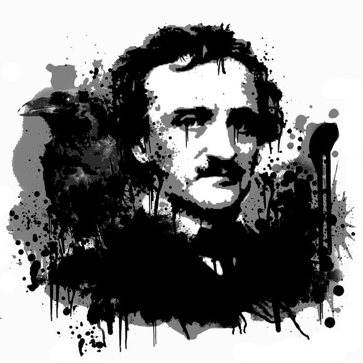

Edgar Allan Poe (Boston, Estados Unidos, 19 de enero de 1809-Baltimore, Estados Unidos, 7 de octubre de 1849) fue un escritor, poeta, crítico y periodista romántico estadounidense, generalmente reconocido como uno de los maestros universales del relato corto, del cual fue uno de los primeros practicantes en su país. Fue renovador de la novela gótica, recordado especialmente por sus cuentos de terror. Considerado el inventor del relato detectivesco, contribuyó asimismo con varias obras al género emergente de la ciencia ficción. Por otra parte, fue el primer escritor estadounidense de renombre que intentó hacer de la escritura su modus vivendi, lo que tuvo para él lamentables consecuencias.
Fue bautizado como Edgar Poe en Boston, Massachusetts, y sus padres murieron cuando era niño. Fue recogido por un matrimonio adinerado de Richmond, Virginia, Frances y John Allan, aunque nunca fue adoptado oficialmente. Pasó un curso académico en la Universidad de Virginia y posteriormente se enroló, también por breve tiempo, en el ejército. Sus relaciones con los Allan se rompieron en esa época, debido a las continuas desavenencias con su padrastro, quien a menudo desoyó sus peticiones de ayuda y acabó desheredándolo. Su carrera literaria se inició con un libro de poemas, Tamerlane and Other Poems (1827).
Por motivos económicos, pronto dirigió sus esfuerzos a la prosa, escribiendo relatos y crítica literaria para algunos periódicos de la época; llegó a adquirir cierta notoriedad por su estilo cáustico y elegante. Debido a su trabajo, vivió en varias ciudades: Baltimore, Filadelfia y Nueva York. En Baltimore, en 1835, contrajo matrimonio con su prima Virginia Clemm, que contaba a la sazón trece años de edad. En enero de 1845, publicó un poema que le haría célebre: «El cuervo». Su mujer murió de tuberculosis dos años más tarde. El gran sueño del escritor, editar su propio periódico (que iba a llamarse The Stylus), nunca se cumplió.
Murió el 7 de octubre de 1849, en la ciudad de Baltimore, cuando contaba apenas cuarenta años de edad. La causa exacta de su muerte nunca fue aclarada. Se atribuyó al alcohol, a congestión cerebral, cólera, drogas, fallo cardíaco, rabia, suicidio, tuberculosis y otras causas.
Poe hizo incursiones asimismo en campos tan heterogéneos como la cosmología, la criptografía y el mesmerismo. Su trabajo ha sido asimilado por la cultura popular a través de la literatura, la música, tanto moderna como clásica, el cine (por ejemplo, las muchas adaptaciones de sus relatos realizadas por el director estadounidense Roger Corman), el cómic, la pintura (varias obras de Gustave Doré, v. gr.) y la televisión (cientos de adaptaciones, como las españolas para la serie Historias para no dormir).
Reseñas de cuentos
Hop-Frog ------- Metzengerstein ------- La caja oblonga ------- El hombre de la multitud ------- La cita